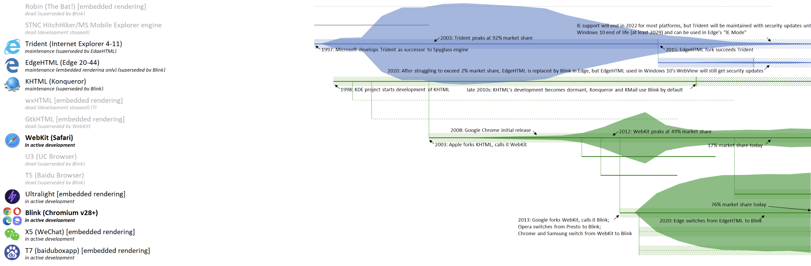
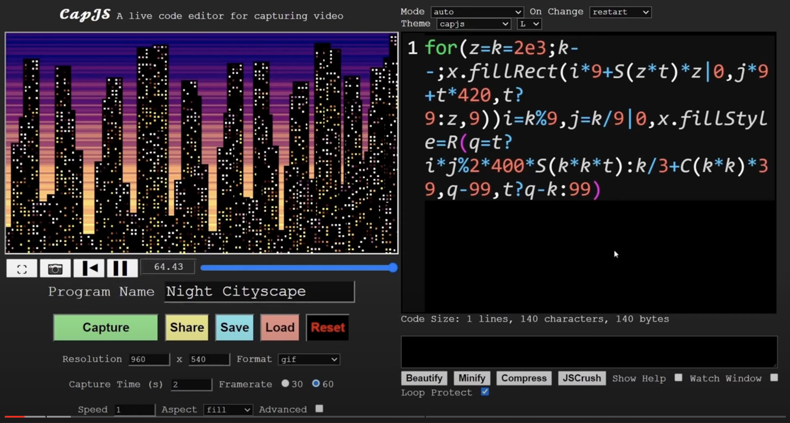

Bleeding Edge Web
@edgeATX
edgeATX.org
June 2024
News From the Bleeding Edge
— Brian Moeskau (@bmoeskau)
The Root of All (Web) Evils
— Kyle Simpson (github.com/getify)
Housekeeping
- Join us on Slack
- Speakers and sponsors always wanted
Thanks to Our Host!
Libraries & Frameworks
React 19 (not) released
A subtle RC change just got noticed on June 11th.
React 18 rendered suspense children in parallel:
<Suspense fallback={"Loading..."}>
<ComponentThatFetchesData val={1} />
<ComponentThatFetchesData val={2} />
<ComponentThatFetchesData val={3} />
</Suspense>
v19 RC changed this loading to sequential.
The Internet was not happy.
React 19 (not) released
Long story short: the React team relented.
- They still recommend hoisting data loading...
- but decided not to drastically slow the Internet
So React 19 is paused until they fix this!
State of JS 2023
Published June 23rd
A few nuggets:
- Most liked: Vite, Jest, React, Svelte
- Most hated: Gatsby, Angular, Selenium, Webpack
- Most popular non-JS: Python, PHP, Java
Also check out the State of HTML 2023 report
And a note on developer burnout
Other notable releases
- May 23 Storybook 8.1
- June 11 Electron 31.0
- June 17 htmx 2.0
- June 20 TypeScript 5.5
Baseline News
What is Baseline?
Web platform features that are ready to use in your projects today.
How features become Baseline "available":
- Newly available: supported by all core browsers *
- Widely available: 30 months since interoperable date
* Chrome / Firefox (desktop + Android), Safari (macOS + iOS), Edge
June browser releases
Stable version releases:
- June 11 Firefox 127
- June 11 Chrome 126
Also notable:
- June 10 Safari 18 beta
JS Set methods
Baseline newly available as of Firefox 127
Async Clipboard API
Baseline newly available as of Firefox 127
execCommand()was the old (synchronous) way- Now we have async
read()andwrite() - Customize via
copyandpasteevents - Learn more
Safari 18 beta
Announced June 10th
- Support for WebXR and hand tracking
- CSS view transitions
writingsuggestionsattribute (on by default)- Improved Passkey support
- Support for
URL.parse - And lots more — check it out!
Safari 18 beta
Also, a few interesting deprecations:
- Removed JPEG2000 image support
- Deprecated the
:-khtml-dragpseduo-class
Web history pop quiz: what does khtml mean?
Web History Spotlight
KHTML
- Was the browser engine for KDE Konqueror
- Konqueror peaked at ~0% market share, but...
- 2002: Apple forks KHTML to create WebKit
- 2103: Google forks WebKit to create Blink
- So ~93% of browsers today descend from KHTML!
History of Web Browser Engines
This is a cool visual of 34 years of browser history.
In Case You
Missed It
Chrome Console Insights
Gemini provides insights right in the DevTools Console, so you can better understand errors and warnings.
- Sign into Chrome, then try the demo.
- Requires Chrome 125+
Disclaimer: "Sometimes, the responses that LLMs produce sound convincing but are actually misleading or meaningless to a human web developer."
Last But
Not Least
Night Cityscape in 140 bytes of JS
- Learn how to create it in 10 minutes
- Remix the code on Dwitter
Thanks!
Brian Moeskau